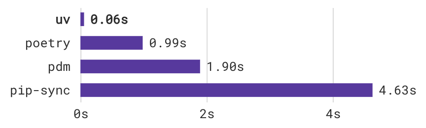
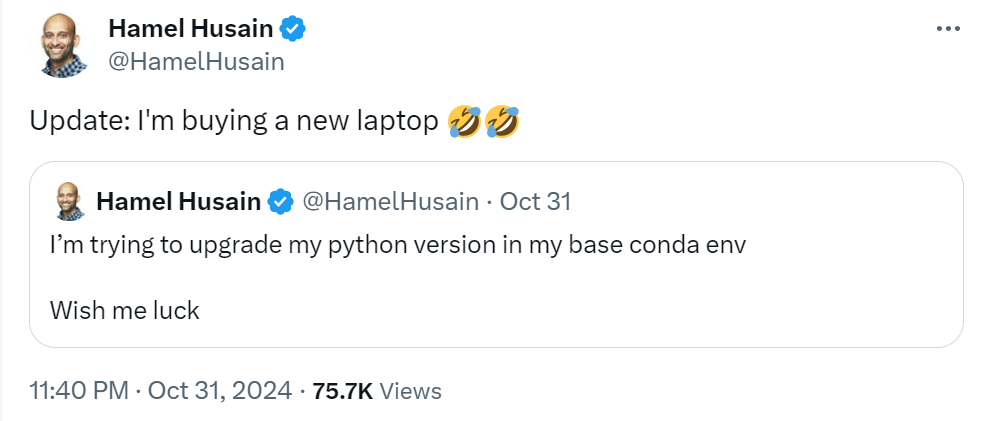

uv+marimo
Introduction
“We shape our tools and thereafter our tools shape us.”
–Marshall McLuhan
Most of this reflection is coming from Trevor Manz in juv: Reproducible Jupyter Notebooks
I must admit it: I like notebooks
Notebooks do have reproducibility problems
Reproducibility of Jupyter Notebooks
- 1.16M notebooks
- Most repositories don’t declare their dependencies
- Those that do don’t declare all of them
- Able to execute: 24%
- Able to produce same results: 4%
In Falling Into The Pit of Success, Jeff Atwood quotes:
“I often think of C++ as my own personal Pit of Despair Programming Language. Unmanaged C++ makes it so easy to fall into traps. Think buffer overruns, memory leaks, double frees, mismatch between allocator and deallocator, using freed memory, umpteen dozen ways to trash the stack or heap – and those are just some of the memory issues. There are lots more ‘gotchas’ in C++. C++ often throws you into the Pit of Despair and you have to climb your way up the Hill of Quality.”
–Eric Lippert
- Wouldn’t it be nice to use a tool designed to keep you from falling into The Pit of Despair?
- Wouldn’t it be even better if you used a tool that let you effortlessly fall into The Pit of Success?
- We want users to simply fall into winning practices by using our tools. To the extent that we make it easy to get into trouble we fail.
“A well-designed system makes it easy to do the right things and annoying (but not impossible) to do the wrong things.”
–Jeff Atwood
GitHub blog: AI leads Python to top language
GitHub blog: AI leads Python to top language
Rethinking the getting started
python -m venv venv
source venv/bin/activate
python -m pip install -r requirements.txt # or just pip install numpy pandas..
jupyter lab notebook.ipynb- 1
- Which python?
- 2
- What happens if you forget to activate it?
- 3
- Which versions of the packages? Which versions of their dependencies?
- 4
- Which jupyterlab? In which order of the cells?
The Gold Standard of the getting started is a single command (no furthur guidance required)
The Gold Standard of the getting started is a single command (no furthur guidance required)
uv + marimo help us do a huge jump towards that goal.
uv: An extremely fast Python package and project manager
uv
An extremely fast Python package and project manager, written in Rust.
Introducing uv: 10-100x faster than pip
uv
- Announced in February 15, 2024
- Stars in GitHub: 25.4k
- Downloads per month: 28.1M (October 2024)
- PyPI share: 13.3% (October 2024)
Rust 🦀 is supercharging Python
- Polars
- Pydantic
- Tantivy
- Qdrant
- LanceDB
- Ruff
- uv
- …
Python package management is a mess

Python package management is a mess
There is a risk…

Why is it a difficult problem?
- No multi-version support -> SAT problem -> NP-hard -> CDCL-based SAT solver
- Rich syntax for filtering requirements by platform -> SAT problem -> NP-hard -> Algebraic decision diagrams
Installation
- Standalone installer
- PyPI
Common workflow
Following the Python Packaging User Guide
Tip
It is recommended to use a virtual environment when working with third party packages.
Common workflow
Following the Python Packaging User Guide
Common workflow
Following the Python Packaging User Guide
Drop-in replacement for venv
- Create a virtual environment at
.venv
Common workflow
Following the Python Packaging User Guide
Drop-in replacement for venv
- Activate a virtual environment
Common workflow
Following the Python Packaging User Guide
Drop-in replacement for pip
- Install a package in the new virtual environment
Workflow
Drop-in replacement for virtualenv
- Create a virtual environment with, e.g., Python 3.11:
Drop-in replacement for pip-tools
- Given a
requirements.in
- Given a
requirements.txt
Drop-in replacement for poetry
- Initialize a project
mkdir hello-world
cd hello-world
uv init
uv run hello.py- Add dependencies
uv add numpy polars- Build distributions
uv build- Publish a package
uv publishRunning scripts with no dependencies
Running scripts with dependencies
example.py
Creating scripts with inline script metadata PEP 732
Improving reproducibility
example.py
Using tools
marimo: Rethinking the notebook to create reproducible notebooks
Getting started
To install:
To start a marimo notebook:
To start a marimo tutorial:
Marimo notebooks are reactive
cell 1:
cell 2:
Marimo notebooks are reactive
cell 1:
cell 2:
Marimo notebooks are executable as a script
Marimo notebooks are executable as a script
Marimo notebooks are git-friendly
Jupyter notebooks can be git-friendly
Reactive UI
Persistent cache
WebAssembly
- Deploy a marimo app as a stand-alone web application that fully runs in the frontend.
- This website will then run your code in the browser via webassembly with pyodide.
- To start: https://marimo.new/
- Example: Understanding tokenizers
Deployment in HuggingFace spaces
Reproducible notebooks
Conclusions
- uv is an extremely fast Python package and project management
- marimo is a reactive notebook with many nice features
- Both of this tools help us drive towards more reproducible programs